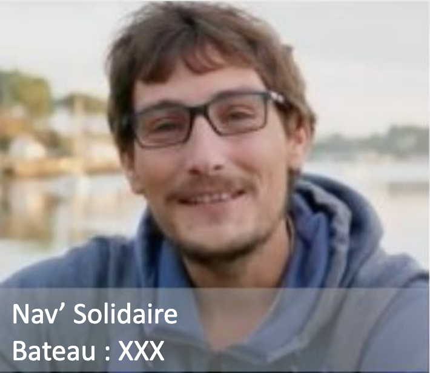
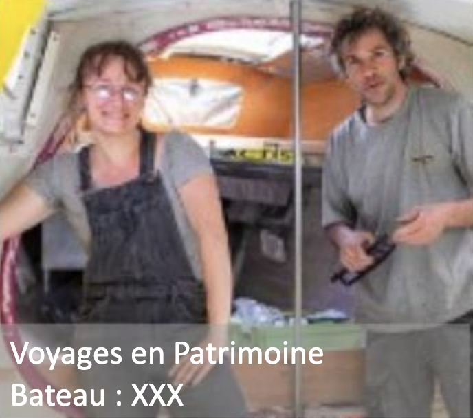
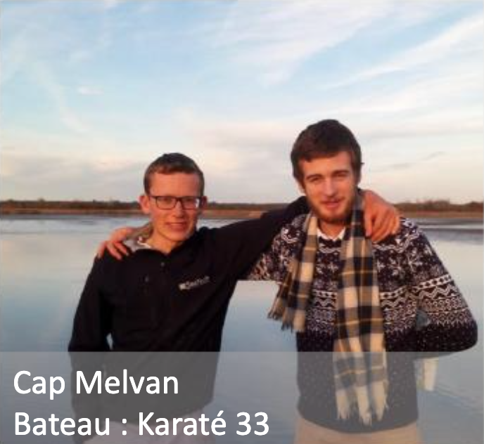
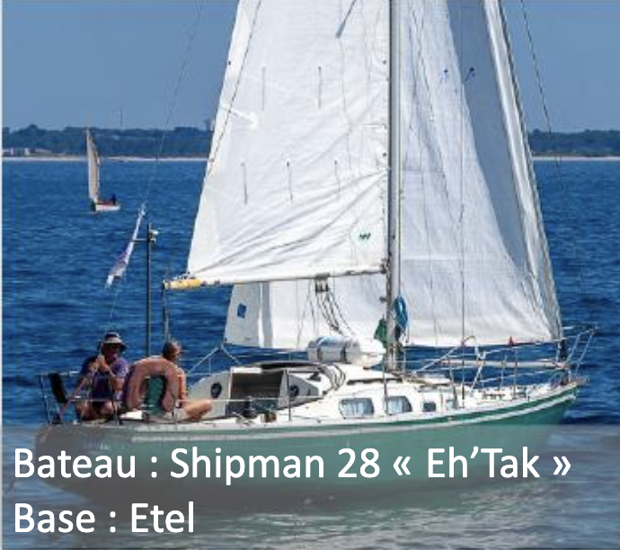

Transmitting, this is Passe-Coque's purpose, accompanying since 2019 associations and projects leaders in the social economy area,
... acting as the hyphen between boats without projects and projects without boats.
Discover the projects Passe-Coque has been helping out:
 PlaceHolder
PlaceHolder
Discover the projects Passe-Coque has been helping out:

PlaceHolder
Nav'Solidaire
Boat: XXX
Boat: XXX

PlaceHolder
Voyages en Patrimoine
Boat: XXX
Boat: XXX

PlaceHolder
Cap Melvan
Boat: Karate 33
Boat: Karate 33
PlaceHolder
Voile Magazine
Boat: Super Arlequin
Boat: Super Arlequin

PlaceHolder
Eh'Tak
Boat: Shipman 28
Boat: Shipman 28
REFIT & SUR-CYCLE
Passe-Coque, it's also a shipyard where all technical and nautical skills can show up to give sailing boats a second life.
Passe-Coque is commited in refit projetcs and boat transformation into light housing through a sur-cycling process.
SHARING